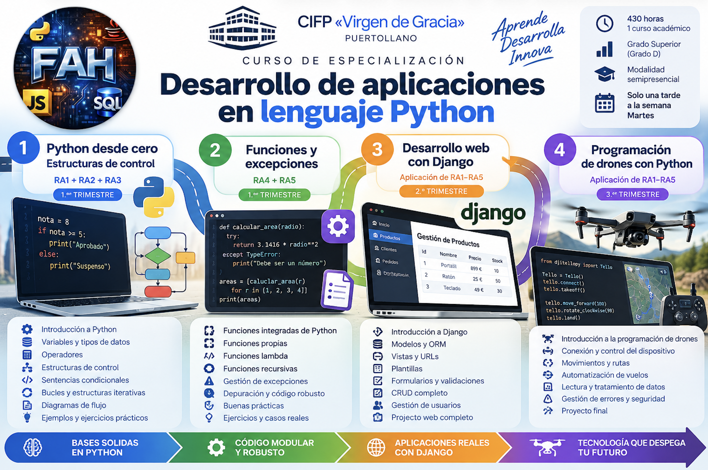

🐍 Desarrollo de Aplicaciones en Python
Apuntes del Curso de Especialización en Desarrollo de Aplicaciones en Python.
📘 Módulo Profesional 5098: Entornos y sintaxis en Python
| Código | Módulo Profesional | Horas | ECTS |
|---|---|---|---|
| 5098 | Entornos y sintaxis en Python | 25 | 3 |
Unidades didácticas
Resultados de aprendizaje
RA1. Análisis y resolución de problemas
Analiza los problemas planteados, identificando los entornos de aplicación y proponiendo estrategias para su resolución.
Criterios de evaluación:
- CE a) Se han identificado las características principales de los entornos de aplicación.
- CE b) Se han definido estrategias conducentes a la resolución del problema.
- CE c) Se han analizado las dificultades que puedan presentarse.
- CE d) Se han realizado diagramas de flujo de las soluciones propuestas.
- CE e) Se ha seleccionado el diagrama de flujo considerado óptimo.
- CE f) Se ha verificado que la solución propuesta es susceptible de ser implementada en Python.
RA2. Elementos de la programación en Python
Caracteriza elementos de la programación en Python, identificando los bloques fundamentales de construcción de un programa.
Criterios de evaluación:
- CE a) Se han definido los aspectos fundamentales de la programación de alto nivel.
- CE b) Se han establecido las diferencias entre lenguajes compilados e interpretados.
- CE c) Se han analizado los bloques principales en la construcción de un programa en Python.
- CE d) Se han establecido las diferencias entre diferentes versiones de Python.
- CE e) Se han identificado los errores más frecuentes en la programación en Python.
- CE f) Se ha valorado la importancia de la depuración de código.
- CE g) Se han analizado segmentos de código, antes y después de la depuración.
RA3. Entornos de trabajo
Evalúa entornos de trabajo para el desarrollo de aplicaciones en Python, indicando sus diferencias y áreas específicas de trabajo.
Criterios de evaluación:
- CE a) Se han analizado los IDE (Integrated Development Environment) más habituales usados en la programación en Python.
- CE b) Se han seleccionado IDE, en función del desarrollo a realizar.
- CE c) Se han analizado las ventajas del uso de frameworks (marcos, esquemas) en el desarrollo de software con Python.
- CE d) Se han comparado diversos editores de código en Python relacionándolos con desarrollos de aplicaciones concretas.
- CE e) Se ha puesto de manifiesto la utilidad del uso de IDLE y frameworks mediante el análisis de software real.
RA4. IDLE y Python Shell
Utiliza el IDLE básico de Python y la ventana Shell, introduciendo los principios de la escritura de software en Python.
Criterios de evaluación:
- CE a) Se han escrito instrucciones elementales para visualizar el funcionamiento básico del lenguaje.
- CE b) Se ha escrito una instrucción en una sola línea.
- CE c) Se ha razonado la mala praxis de escribir varias instrucciones en una línea.
- CE d) Se ha escrito una instrucción en varias líneas.
- CE e) Se han escrito en consola las instrucciones.
- CE f) Se han utilizado sangrados explicando su utilidad.
- CE g) Se han escrito comentarios en Python.
- CE h) Se han instalado y probado editores de texto no integrados en el entorno.
RA5. Sintaxis, operadores y tipos de datos
Aplica la sintaxis y operadores y tipos simples y complejos en Python, escribiendo instrucciones básicas y verificando sus resultados.
Criterios de evaluación:
- CE a) Se ha escrito código con sintaxis básica.
- CE b) Se conocen y distinguen los distintos tipos de operadores.
- CE c) Se han escrito instrucciones básicas con cada tipo de operador.
- CE d) Se distinguen y utilizan los distintos tipos de datos.
- CE e) Se han utilizado los distintos tipos de operadores en un código básico.
- CE f) Se han hecho operaciones entre iguales y distintos tipos de datos.
📗 Módulo Profesional 5099: Estructuras de control en Python
| Código | Módulo Profesional | Horas | ECTS |
|---|---|---|---|
| 5099 | Estructuras de control en Python | 40 | 5 |
📘 Unidades Didácticas
- UD1. Estructuras de control en Python
- UD2. Funciones y gestión de errores en Python
- UD3. Desarrollo de aplicaciones web con Django
- UD4. Programación y control de drones con Python

Ejercicios
Resultados de aprendizaje
RA1. Estructuras de control
Identifica las estructuras de control en Python relacionándolas con aplicaciones reales.
Criterios de evaluación:
- CE a) Se han identificado las estructuras de control que permiten modificar el flujo de las instrucciones.
- CE b) Se han representado en un diagrama de flujo gráfico las estructuras de control.
- CE c) Se han analizado la importancia de las condiciones en cada estructura de control.
- CE d) Se han tenido en cuenta la importancia de los sangrados en las estructuras de control.
- CE e) Se han escrito bloques de control secuencial.
- CE f) Se han escrito bloques de control de selección.
- CE g) Se han escrito bloques de control de repetición.
RA2. Sentencias condicionales
Reconoce las sentencias condicionales en Python aplicándolas a la resolución de problemas que impliquen toma de decisiones.
Criterios de evaluación:
- CE a) Se ha interpretado el concepto de sentencia condicional.
- CE b) Se han identificado las partes de las que consta una sentencia condicional.
- CE c) Se ha aplicado correctamente el sangrado.
- CE d) Se ha aplicado la ejecución condicional y control de variables.
- CE e) Se han interpretado el funcionamiento de las sentencias condicionales.
- CE f) Se han aplicado correctamente las sentencias condicionales.
- CE g) Se han interpretado y aplicado correctamente las anidaciones.
- CE h) Se aplica correctamente la sintaxis a aplicar en estructuras compactas.
- CE i) Se han escrito bloques de programas utilizando sentencias condicionales.
- CE j) Se han escrito bloques de programas utilizando sentencias condicionales anidadas.
RA3. Sentencias iterativas
Utiliza sentencias iterativas analizando las necesidades del código para resolver un problema.
Criterios de evaluación:
- CE a) Se ha interpretado el concepto de sentencia iterativa.
- CE b) Se ha diferenciado entre estructuras condicionales e iterativas.
- CE c) Se ha verificado el funcionamiento de las sentencias iterativas.
- CE d) Se han aplicado las sentencias iterativas de acuerdo a las necesidades.
- CE e) Se han escrito bloques de programas utilizando los bucles
forywhile. - CE f) Se han interpretado y aplicado los anidamientos de estructuras.
RA4. Funciones
Aplica funciones de Python de distintos tipos mejorando la eficiencia del programa.
Criterios de evaluación:
- CE a) Se comprende la necesidad de usar funciones de Python y sus ventajas.
- CE b) Se ha escrito código que incluya funciones Build-in de Python.
- CE c) Se ha escrito un programa con funciones definidas por la propia persona usuaria.
- CE d) Se aplican correctamente las funciones lambda en un programa de Python.
- CE e) Se han creado funciones recursivas partiendo de funciones definidas anteriormente por la persona usuaria.
RA5. Arquitectura de código y excepciones
Crea arquitectura de código de forma eficiente y escribe código robusto.
Criterios de evaluación:
- CE a) Se ha diferenciado entre el concepto de excepción y los errores de sintaxis.
- CE b) Se ha escrito instrucciones de captura de excepciones.
- CE c) Se han capturado y tratado excepciones.
- CE d) Se han tratado excepciones.
- CE e) Se han realizado depuraciones de excepciones correctamente.
- CE f) Se han escrito bloques de código robusto utilizando las sentencias adecuadas.